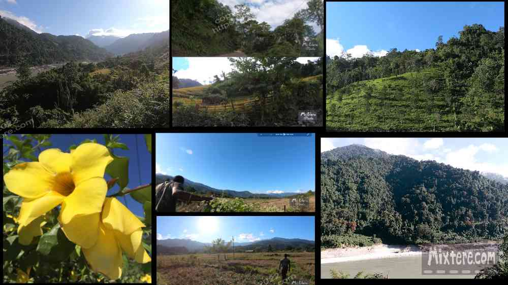

My meddling on google maps had set my heart on visiting the outpost of Mechuka Village, not far below Tibet. For some reason this place had established itself in my mind (and that of many other travelers) as a sort of “El Dorado” of the Northeast. To get there meant numerous jeep trips and stop overs, which in my case were the towns of Pasighat and Aalo. The geography and routing of the jeeps landed me in Pasighat first. In Debrugarh a young tribal girl with tattoos had seen me and called to me from her taxi. I don't know if she truly liked me or wanted freedom or money or something. I think she was unhappily married. Anyway, she had gotten me in contact with her brother who lived in Pasighat. The man had recommended a place to stay that I think was a sort of upscale government guesthouse for officials. Once the jeep dropped me off in central Pasighat, if there was such a thing. I checked my map, found the location of the guesthouse and decided to walk the kilometer up hill with all my gear. I was huffing and puffing and sweating a good deal by the time I got there.
I immediately noticed that the entry was littered with government vehicles and official looking people in uniform. It looked like some sort of "to do" was going on. I went in to inquire about accommodation. There were a lot of people around looking very important in pressed uniforms. I was promptly told that I could not stay there. Frustrated, I took a moment to catch my breath before descending back into the town to seek accommodation. As far as I saw Pasighat was nothing to take pictures of so I have little to offer you. To me it felt like a tribal place where it would be best to attempt to keep a lower profile. I doubted that my lanky, foreign self would have been able to achieve this.
I wasn’t going to be finding any charming accommodation so I just opted for the first passable hotel that I came across along the main road. I was dinghy and the paint was faded and peeling but it would do. I checked in for what I believe was 600 rupees. I was on the third floor of the hotel and had a view of the excessively polluted river and what turned out to be a sort of tribal ghetto settled along it. Below me and directly across the river a tribal gunsmith kept an open shop there along the river. Occasionally firearms would be tested right on location. This was startling and I said something to the hotel staff about it. “Gunshots?!” The clerk said mimicking surprise. “No sir, no gunshots.” Well I guess I wasn’t going to get anywhere trying to address the subject.
I went back to the hotel and lay on the bed to rest and while away the afternoon. I hung the Assamese kurta that Hironmoy had given me on the television which I would not even turn on during my stay. This simple kurta had curried favor for me throughout my travels in Assam and the Northeast. To many people it said that I cared about the culture of Assam and was trying to honor it. I was trying and in almost every instance I was received honorably. After a while I got over feeling goofy about wearing the kurta and even felt somewhat naked without it. Unfortunately I forgot I put it there and left without it that next morning!
Evening came, I returned to the same restaurant and then to the hotel to try to will the day to be over. As the sun set a few more shots rang out and I looked below to see the gun-smoke settling. What a world I was in! The next morning I was actually happy to be boarding the jeep to Aalo. Aalo was the last staging point before setting out for Mechuka village. Michael, the cross-country Irish biker that had welcomed me as a neighbor in Dibrugarh, had recommended a place for me to stay in Aalo- Reyi Homestay.His recommendation meant a lot considering where I had just spent the night. The jeep started up and took off in the early light. I remember this leg of the journey being more pleasant than the others. We kept mostly to the river valley and did not traverse switchbacks and rise and fall too much. It was mostly just a beautiful, moderate incline with lots of greenery and sunlight along the way. The driver was not punching the accelerator, I did not have my heart in my throat , I was not being crushed by my fellow passengers and I had a good view of the passing countryside. As far as Sumo rides went this was some of the best that I had had.The jeep followed the pristine river valley for a bit and then we stopped for tea at a little shack/resteraunt and everyone filed inside. I chose to linger in the river valley, take pictures and try to fathom the magnitude of the natural beauty before me. My little go-pro and old phone just did not do the view justice.
Then the jeep got going again for the last leg of the journey. I only remember more of the beautiful river valley the whole way, buildings made from natural materials from the area, thatched roofs, tones of copper and light green, grass, the beautiful jade tones of the river and the bright clay color of the earthen road. Eventually the riverbed widened to a vast span of rounded river rock and the road dropped right down next to it. The jeep pulled to a stop. Aalo. The town was mostly just shack-shops and restaurants with corrugated metal roofs. I did some shopping for road snacks and sought out an ATM for some cash. Walking along the road I was not keeping a low profile. I encountered lots of stares, greetings from teenagers and stumbling red-eyed men. It was obvious that drinking was a daily pastime for a certain percentage of the population. I saw signs discouraging the use of inhalants, like glue and gasoline. I made a mental note not to have a run in with a tribal drunk or gas-sniffer that was three sheets to the wind. I think these tribal communities have stories to tell, stories I don't know yet.
I found the ATM, added to my snack stash at the shop next door. I then called Mr. Liduk of Reyi Homestay. He said he was finishing work and would send a driver to pick me up. I wondered why he would do this for a backpacker but I appreciated it none the less. Soon the driver pulled up in a very nice Tata Sumo four wheel drive with a turbo and manual transmission. We stopped by Mr. Liduk’s production office where I think he managed a local tv channel and produced content for it. Apparently Mr. Liduk was producing films at his production station that attempted to bring to light issues like lack of public education and health services for the tribal folk. Soon the powerful man came out. We exchanged greetings and he welcomed me warmly. Soon we were driving up out of town a few kilometers and then down into his extensive guest house compound. The place was extensive, it was clear that Mr. Liduk was doing well for himself. He introduced me to staff at the guesthouse and then showed me to my room. It was small but clean and newly finished. It was clear that I was staying at the low end of the totem pole at this guesthouse. It was quite nice that I was not being treated as such. Tea was brought and Mr. Liduk invited me to join his guests for drinks later. I sort of wish I had taken him up on it but I was run down and did not want to get drunk. There was something about the place and the way people deferred to Mr. Liduk. He was a pretty powerful man, a chief I think, and a successful businessman to boot. I noticed that the ladies of the guesthouse were extremely deferential to, even fearful of him. Something told me to keep my distance.
Upon walking further into the guesthouse I was horrified to discover that a troupe of American geologists were using the guesthouse as a staging point for their research. I had not heard an American accent in about two and a half months. I had had the honor and responsibility of being the only American around. I chafed at suddenly being surrounded by Americanisms. It’s strange (and I have written about this before) how this feeling wells up in regard to other westerners when one is trying to immerse oneself in a different culture. You can see Western tourists openly ignoring, even frowning upon each other as they walk down the street. My guess is this response is about trying to preserve the cultural experience and prolong returning to one’s own culture. I am still investigating this phenomenon.
Anyway I met the geologists and settled into what turned out to be a very nice stay in Aalo. My ego was pumped a bit when I learned that this group had to pay about two hundred dollars per day to a guide as part of their arrangement. They were jealous that I had found a way to avoid this. My inner Indiana Jones glowed a bit from the little victory, all thanks to Hironmoy's tips. I was tired from the jeep ride and not jazzed about the prospect of another day in the jeep to Mechuka, I tried to relax and do relatively little. Aalo was arguably the most beautiful place that I was to travel to in Arunachal Pradesh. The natural beauty was stunning. At my request my host had one of his employees walk me through a maze of paths to the river about a mile away. Once there I wandered the river’s edge and met a local who showed me a zip-line set up for tourists like me. We vaulted up a ladder to a sort of bamboo treehouse. From there I eyed the trajectory of the zip-line… right into the river rocks. If I were younger and even more foolish I might have gone for a zip. But my age and the thought of what medical facilities I might end up at if something went wrong convinced me otherwise. There is a video of the walk to the river of Aalo, below.
Right-click below to open in new tab

Click below for next chapter